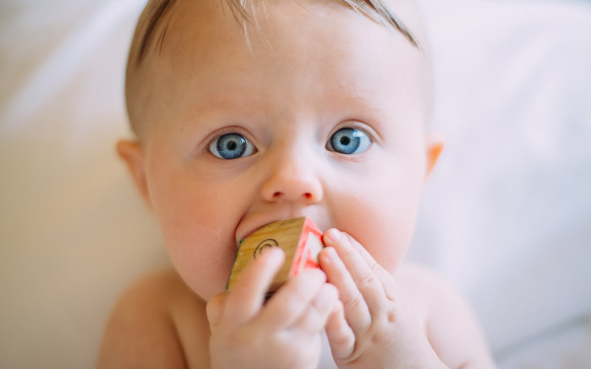

12 · Inglês em casa
Como Estimular o Inglês em Casa Sem Falar Inglês

Uma das perguntas mais frequentes que recebemos de famílias interessadas na Maple Bear Bento Gonçalves é esta: "Mas eu não falo inglês. Consigo mesmo ajudar meu filho em casa?" A resposta é um sim entusiasmado — e este artigo foi escrito exatamente para mostrar como.
O bilinguismo de uma criança não depende da fluência dos pais. Depende, sim, de um ambiente rico em exposição, de consistência ao longo do tempo e de uma parceria sólida entre a família e a escola. Você não precisa dar aulas de inglês para o seu filho. Você precisa criar as condições para que ele encontre o idioma com frequência, de formas que sejam prazerosas e naturais para a idade dele.
Nas próximas páginas, vamos explorar o que a ciência da aquisição bilíngue tem a dizer, quais hábitos concretos funcionam em casa, como adaptar tudo isso à faixa etária do seu filho e como escola e família se complementam nesse processo.
Por Que o Ambiente em Casa Importa (e Muito)
Crianças aprendem idiomas por exposição cumulativa. Quanto mais horas de contato com o idioma ao longo da infância — em contextos variados, carregados de emoção e significado — mais rápido e sólido é o desenvolvimento. A escola bilíngue oferece imersão estruturada durante o período escolar; o que acontece em casa determina se esse acúmulo cresce ou permanece estagnado.
Pesquisas em psicolinguística mostram que crianças precisam de pelo menos 25% do seu tempo de vigília em contato com o segundo idioma para desenvolver fluência real. Para um bebê ou criança pequena que dorme cerca de 12 horas, isso corresponde a aproximadamente 3 horas diárias. Parece muito? Na prática, músicas durante o banho, um episódio de desenho no almoço e uma história antes de dormir já preenchem boa parte desse tempo — sem nenhuma aula, sem pressão.
O ponto central é este: você não ensina o idioma. Você oferece o ambiente. Quem ensina são os professores e o próprio contato da criança com conteúdos autênticos em inglês.
Como o Cérebro Infantil Aprende Dois Idiomas
Antes dos 7 anos — e especialmente antes dos 3 — o cérebro humano está em seu pico de plasticidade fonológica: a capacidade de perceber, distinguir e reproduzir sons de qualquer idioma. Bebês de 6 meses já diferenciam fonemas de línguas distintas. Aos 12 meses, esse repertório começa a se especializar nos sons do ambiente ao redor.
É por isso que a exposição precoce importa tanto: ela "reserva" no sistema auditivo e fonológico da criança espaço para o inglês antes que a janela sensível comece a se fechar. Isso não significa que crianças mais velhas não possam aprender — podem, e muito bem — mas o processo é qualitativamente diferente: mais consciente, mais analítico, menos automático.
Outro conceito importante é o período de silêncio: crianças em imersão num novo idioma passam semanas ou meses compreendendo muito mais do que produzem. Esse silêncio não é falta de progresso — é o cérebro processando input e construindo estruturas internas antes de começar a falar. É exatamente o mesmo processo pelo qual passaram quando aprenderam o português.
12 Hábitos Simples Para Criar um Ambiente Bilíngue em Casa
Você não precisa fazer tudo de uma vez. Comece com dois ou três hábitos que se encaixem naturalmente na sua rotina e vá adicionando outros ao longo do tempo. Consistência é mais valiosa do que variedade.
Para os ouvidos: sons e músicas
- Músicas em inglês como trilha sonora do dia. Playlists de nursery rhymes (Little Baby Bum, Super Simple Songs, Cocomelon) para os menores; músicas de artistas como Laurie Berkner ou They Might Be Giants para crianças maiores. O ritmo e a repetição tornam as palavras memoráveis sem esforço.
- Podcasts e audiobooks infantis. Histórias narradas em inglês — mesmo que a criança não entenda tudo — constroem familiaridade com a prosódia, a entonação e o fluxo natural do idioma. Spotify Kids e Audible têm acervos grandes.
- Rádio ou playlists em inglês ao fundo. Não precisa ser educativo. Música ambiente em inglês durante o jantar ou o brincar livre já conta como exposição.
Para os olhos: séries, filmes e livros
- Desenhos e séries em inglês. Peppa Pig, Bluey, Paw Patrol, Bluey e Sesame Street têm vocabulário simples, repetição intencional e narrativas emocionalmente envolventes — ingredientes perfeitos para aquisição. Para crianças maiores, séries live-action leves funcionam bem.
- Filmes com áudio em inglês e legenda em português. A partir dos 6-7 anos, legendas em português ajudam a conectar o que se ouve ao significado. Não use legendas em inglês para crianças pequenas — o esforço de leitura compete com a escuta.
- Livros ilustrados bilíngues. A leitura compartilhada — você e seu filho juntos, apontando imagens, repetindo palavras — é uma das formas mais ricas de exposição. Não precisa pronunciar tudo perfeitamente: o que importa é o ritual e o contato com o texto.
- Livros em inglês puro, especialmente os clássicos ilustrados. The Very Hungry Caterpillar, Goodnight Moon, Where the Wild Things Are — textos simples, repetitivos e visualmente ricos que a criança pode "ler" sozinha mesmo sem entender cada palavra.
Para brincar: jogos e aplicativos
- Aplicativos com lúdica bem desenhada. Lingokids, Khan Academy Kids e Duolingo ABC (para leitores iniciantes) oferecem jogos com vocabulário contextualizado, feedback positivo e progressão gradual. Use com equilíbrio — são complementos, não substitutos.
- Flashcards e jogos de memória bilíngues. Atividade analógica, sem tela, que pode ser feita em família. Ótimo para faixas de 3 a 8 anos. Peça que a criança ensine você — ensinar reforça o aprendizado de forma poderosa.
- Jogos de tabuleiro com instruções em inglês. Para crianças maiores (8+), jogos como Spot It, Codenames Kids ou qualquer jogo de cartas com nomenclaturas em inglês introduzem o idioma num contexto de prazer e interação social.
No cotidiano: palavras na rotina
- Palavras da rotina em inglês. Você não precisa falar inglês fluente — mas pode inserir palavras soltas: "good morning", "let's go", "time to sleep", "well done". Repetidas diariamente, essas expressões se tornam parte do repertório passivo da criança.
- Etiquetar objetos da casa. Um post-it com "door", "fridge", "window", "table" nos respectivos objetos cria um ambiente visualmente rico e transforma a casa numa extensão da sala de aula bilíngue.
Atividades por Faixa Etária: O Que Funciona Melhor em Cada Fase
| Faixa etária | Foco do desenvolvimento | O que funciona melhor em casa |
|---|---|---|
| 1,5 a 3 anos | Fonologia, ritmo, prosódia | Músicas, nursery rhymes, histórias narradas, contato com livros ilustrados |
| 3 a 5 anos | Vocabulário receptivo, estruturas simples | Desenhos animados, livros bilíngues, flashcards, palavras da rotina |
| 5 a 7 anos | Vocabulário produtivo, início da leitura | Séries com legenda em PT, apps, jogos de memória, livros fáceis em inglês |
| 7 a 10 anos | Gramática implícita, escrita inicial | Filmes, jogos de tabuleiro, canais do YouTube, leitura independente |
| 10 a 14 anos | Fluência, escrita, pensamento abstrato | Séries, podcasts, jogos online, livros YA, canais de interesse do adolescente |
A tabela acima é um guia, não uma prescrição. Crianças se desenvolvem em ritmos diferentes, e uma criança de 4 anos que cresceu com muita exposição pode estar pronta para conteúdos de faixas superiores. Observe o interesse e o engajamento do seu filho como bússola.
🍁 Quer ver como fazemos isso na escola?
Na Maple Bear Bento Gonçalves, a imersão em inglês começa no Bear Care — e vai até o Fundamental. Agende uma visita e conheça a metodologia ao vivo.
Agendar Visita GratuitaO Que Evitar: Armadilhas Comuns
Algumas abordagens bem-intencionadas podem atrapalhar mais do que ajudar. Fique atento a estes pontos:
- Forçar a produção oral prematura. Perguntar "fala em inglês!" ou cobrar que a criança reproduza palavras cria ansiedade e associa o idioma à pressão. Deixe a produção emergir naturalmente.
- Usar pronúncias muito incorretas repetidamente. Se você não tem certeza da pronúncia de uma palavra, prefira mostrar o conteúdo em áudio (música, vídeo) em vez de reproduzir você mesmo. Pronúncias muito distorcidas podem cristalizar erros.
- Tratar o inglês como obrigação ou lição de casa. A exposição em casa funciona porque é leve, prazerosa e integrada à vida. Assim que vira tarefa, o engajamento cai.
- Desistir cedo demais. O bilinguismo é uma maratona. Resultados visíveis levam meses — às vezes mais de um ano. A ausência de produção oral não significa ausência de aprendizado.
- Superdependência de telas. Telas são ferramentas valiosas, mas não substituem interação humana e leitura. Equilibre com livros, música ao vivo e brincadeiras.
Como Escola e Casa Se Complementam
A Maple Bear Bento Gonçalves trabalha com imersão estruturada: parte significativa das aulas acontece em inglês, seguindo a metodologia canadense que integra o idioma ao currículo — não como disciplina isolada, mas como veículo de todo o aprendizado. Quando a família cria em casa um ambiente que ecoa o que a escola faz, os resultados se multiplicam.
Pense assim: a escola é o laboratório — estruturado, guiado, com professores especializados. O lar é o campo de prática — informal, afetivo, com as pessoas mais importantes para a criança. Os dois ambientes se alimentam mutuamente. Uma criança que chega na segunda-feira com horas de música e séries em inglês acumuladas no fim de semana entra na aula com o idioma mais "fresco" na memória auditiva.
"Não se trata de criar um ambiente artificial de aprendizado em casa. Trata-se de tornar o inglês uma parte tão natural da vida quanto o português — presente nas músicas preferidas, nas histórias antes de dormir, nos filmes do fim de semana."
Se quiser entender melhor a base científica por trás da convivência entre dois idiomas ou por que o Bear Care começa tão cedo, temos artigos dedicados a esses temas no Diário.
Um Plano de Início: Sua Primeira Semana
Para quem quer começar hoje, aqui vai uma sugestão prática de primeira semana — sem pressão, sem planejamento elaborado:
- Dia 1: Adicione uma playlist de músicas em inglês para a faixa etária do seu filho. Use no carro ou durante o café da manhã.
- Dia 2: Selecione uma série ou desenho em inglês que você já conheça e coloque no lugar do conteúdo em português em um momento do dia.
- Dia 3: Visite uma livraria ou biblioteca e escolha um livro ilustrado bilíngue para ler juntos antes de dormir.
- Dia 4: Introduza duas ou três palavras da rotina em inglês: "good morning", "time to eat", "let's go".
- Dia 5: Explore um aplicativo gratuito (Lingokids ou Khan Academy Kids) com a criança por 20 minutos.
- Fim de semana: Assista a um filme em inglês juntos. Sem cobranças, sem testes — apenas a experiência compartilhada.
Ao final de uma semana, você já terá criado o esboço de uma rotina bilíngue em casa. A partir daí, é questão de manutenção e ajustes conforme o que engaja mais o seu filho.
Perguntas Frequentes Sobre Inglês em Casa
Preciso falar inglês para estimular meu filho em casa?
Não. Você não precisa saber inglês para criar um ambiente rico em exposição ao idioma. Músicas, séries, audiobooks, aplicativos e livros bilíngues funcionam como fontes naturais de input — e a qualidade do conteúdo importa mais do que a fluência dos pais. Sua função é curar bons recursos, tornar o contato com o inglês parte agradável da rotina e confiar no processo que a escola conduz. Pais que não falam inglês têm filhos plenamente bilíngues todos os dias.
Com que idade posso começar a expor meu filho ao inglês em casa?
Desde o nascimento — e quanto antes, melhor. Bebês já distinguem sons de idiomas diferentes nos primeiros meses de vida. Antes dos 3 anos, o cérebro está em seu período mais plástico para aquisição de linguagem: sons, ritmos e padrões são absorvidos com facilidade extraordinária. Isso não significa pressão ou "aulas" — basta músicas, histórias narradas e pequenas rotinas em inglês. A partir dos 3 anos, séries animadas e livros ilustrados bilíngues se tornam aliados poderosos.
Quanto tempo por dia de exposição ao inglês em casa é suficiente?
Estudos de aquisição bilíngue indicam que entre 25% e 30% do tempo de vigília da criança em contato com o segundo idioma já produz resultados consistentes. Na prática, isso equivale a cerca de 1 a 2 horas diárias de exposição de qualidade — não necessariamente contínua. Uma playlist de músicas no carro, meia hora de desenho em inglês e 20 minutos de leitura de livro bilíngue à noite já constroem um volume expressivo ao longo das semanas. O segredo é consistência, não intensidade.
Aplicativos de inglês para crianças realmente funcionam?
Aplicativos como Duolingo Kids, Khan Academy Kids e Lingokids podem ser bons complementos, especialmente a partir dos 4 anos, quando a criança já compreende a lógica de um "jogo com objetivo". O ponto-chave é o uso consciente: apps são ferramentas, não substitutos para a imersão real. Funciona melhor quando o app é usado em conjunto com outras formas de exposição (séries, músicas, escola) e quando o tempo de tela é equilibrado com brincadeiras e leituras. Prefira apps sem propagandas e com feedback positivo, não punitivo.
Como saber se meu filho está progredindo no inglês?
Os sinais de progresso são sutis no começo e vão se tornando evidentes com o tempo. Fique atento a: entendimento de comandos simples em inglês sem tradução ("Let's go!", "Good job!"), repetição espontânea de palavras ou frases de músicas e séries, interesse aumentado em conteúdos em inglês, e — em crianças escolares — pequenas produções orais ou escritas no idioma. Converse regularmente com os professores da escola bilíngue: eles têm instrumentos de observação pedagógica e podem dar um panorama preciso do desenvolvimento.
Conclusão: O Lar Como Extensão da Escola Bilíngue
Estimular o inglês em casa não exige fluência, não exige equipamentos especiais e não exige abrir mão da sua rotina. Exige, isso sim, intenção e consistência: escolher conteúdos de qualidade, integrá-los de forma prazerosa ao dia a dia e confiar no processo de longo prazo.
A escola bilíngue faz a parte estruturada e especializada. A família cria o ambiente emocional e a frequência de contato que transforma a exposição em idioma vivido. Juntos, esses dois mundos entregam o que nenhum dos dois entregaria sozinho: uma criança que cresce com o inglês como parte natural de quem ela é.
Se você ainda está avaliando se uma escola bilíngue faz sentido para o seu filho, ou quer entender melhor como a Maple Bear Bento Gonçalves organiza a imersão desde o Bear Care, ficaremos felizes em receber a sua família para uma visita.
Quer uma orientação personalizada?
Deixe seu nome e WhatsApp — conversamos com você sobre a faixa etária do seu filho e o melhor ponto de entrada na Maple Bear Bento Gonçalves.
🔒 Não armazenamos nada. Abre direto no WhatsApp da escola.
Conheça a Maple Bear Bento Gonçalves.
Imersão bilíngue desde 1,5 ano no Bear Care — com a metodologia canadense que combina ensino de qualidade e afeto. Venha conhecer pessoalmente.
📅 Agendar minha visita pelo WhatsAppVagas limitadas · pré-matrícula 2027 (Year 1) aberta
Sua família está mais perto de Caxias do Sul? Conheça a Maple Bear Caxias do Sul — a mesma metodologia canadense, pertinho de você.
📖 No blog de Caxias do Sul: Lição de Casa na Escola Bilíngue: Como Funciona e Como Ajudar Sem Falar Inglês · Escola Bilíngue e o ENEM: Como a Imersão em Inglês Potencializa Resultados